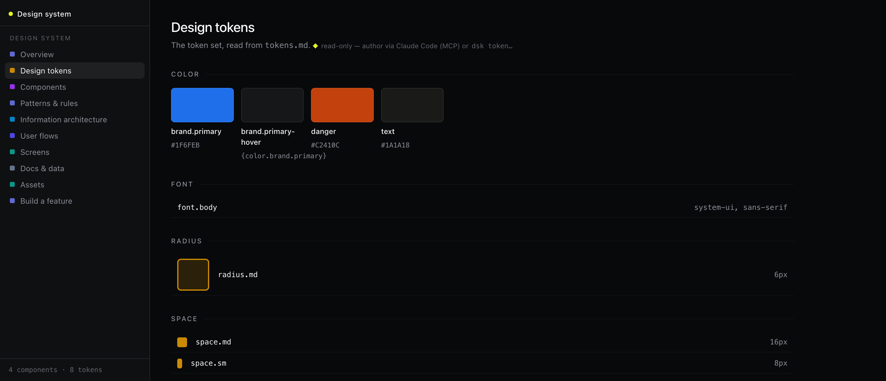
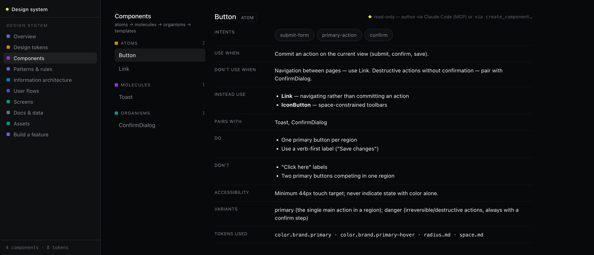

Give your design system
a memory
dsk stores your product's tokens, components, usage rules, flows, and screens as structured data beside your code — readable by humans and by AI coding assistants over MCP.

One core, three faces
Everything is a projection over the same store — a human-readable file repo or SQLite. Build it from the terminal, see it in the browser, hand it to an agent.
The dsk CLI
Tokens, components, patterns, guidelines — authored from the terminal, exported as tokens.css, design.md, AGENTS.md.
✓ Initialized "Acme"
$ dsk token set color.brand.primary "#1F6FEB"
✓ saved · 8 tokens
$ dsk export
✓ tokens.css · design.md · AGENTS.md
The visualizer dsk serve
A React app + JSON API in one process — token swatches, component cards with use-when rules, draggable IA maps and user flows.
The agent surface MCP
Claude Code plugs in over MCP to search components by intent, check the rules, lint proposed UI — and author new entries.
← Button · ConfirmDialog
▸ get_component name:"Button"
← use-when · variants · a11y · tokens
▸ lint_screen name:"Settings"
← ✓ passes 12 guidelines
Quickstart
Requires Node.js 20+. Clone, seed with the example design system, and serve.
# get it git clone https://github.com/rabindranath1311/dsk cd dsk && npm install # create a design system and load the example seed npm run dsk -- init --name "Acme" npm run dsk -- import examples/seed.acme.json # build the visualizer once, then serve npm run build:web npm run serve # → http://localhost:4321
Built for AI coding assistants
Components carry explicit use-when / don't-use-when rules, intents, do/don't lists, and accessibility notes — so an agent picks the right component and obeys the system.

# connect Claude Code over MCP npm run dsk -- mcp-config # writes .mcp.json (HTTP → localhost:4321/mcp) npm run serve # keep the server running
What's in the memory
Six kinds of design knowledge, versioned beside your code.
| Kind | What it captures |
|---|---|
| Tokens | DTCG design tokens (color, space, radius, type…) with aliases |
| Components | Atomic-design level, intents, variants, use-when / don't-use-when, do/don't, a11y, tokens used |
| Patterns & guidelines | Recurring solutions and the cross-cutting rules that govern components |
| IA & flows | App maps and user flows as draggable node graphs |
| Screens | Purpose, states, and the components each screen uses |
| Docs & assets | PRDs, brand refs, research, icons — the grounding agents read |